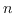

Syntax:
This pair implements a client server connection. data_server is executed on the compute server, and services any requests coming in on the given port. get_vars attaches to the compute server, and downloads the compute server's model variable into the client's model variable. The client can the follow on with the usual instruments for analysing the data. The advantage in this approach is that X-window traffic can be avoided, the total amount of traffic between client and server can be controlled by how often these routines are called. An example setup is located in console.tcl and engine.tcl. An alternative client/server scenario can be contructed using Tcl sockets, and the console2.tcl/engine.tcl give an example of just transferring the  of the predator-prey example. This has a great deal of flexibility, allowing, for example, messages to be propagated from client back to the server to allow user interactivity into the model